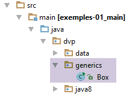
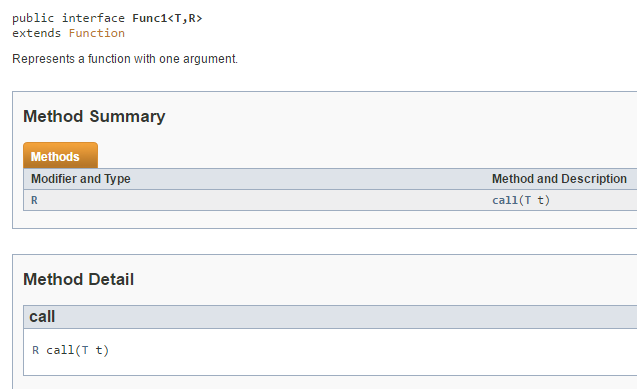

3. 泛型类和方法的签名
 |
RxJava 库包含许多将泛型接口实例作为参数的方法。有时，这些方法的签名较为复杂。以下是一些示例：
public final <R> Observable<R> map(Func1<? super T,? extends R> func)
public final <R> Observable<R> flatMap(Func1<? super T,? extends Observable<? extends R>> func)
这两个方法使用了两个泛型类型 T 和 R。但例如 map 方法的参数定义：Func1<? super T,? extends R> func 是什么意思呢？
有关泛型的信息可查阅 URL [https://docs.oracle.com/javase/tutorial/java/generics/]。下文中的部分信息源自 URL。泛型自 Java 1.5 版本起引入。
假设有一个提供不同类型信息的Web服务。该Web服务有时可能无法成功提供信息，此时必须向客户端报告错误。因此，我们可以将Web服务的响应标准化为以下形式：
public class Response<T> {
// ----------------- 属性
// 操作状态
private int status;
// 可能出现的错误信息
private List<String> messages;
// 响应正文
private T body;
...
}
- 第 1 行：类 [Response] 由类型 T 进行参数化；
- 第 9 行：类型 T 是响应正文的类型，即客户端实际期望接收的内容；
- 第 5 行：错误代码，若无错误则为 0；
- 第 7 行：解释错误的消息，若无错误则为 null；
在客户端，我们可以这样编写：
Response<Product> product=getDataFromWebService(...) ;
或
Response<List<Product>>=getDataFromWebService(...) ;
形式类型 T 被替换为实际类型，此处为 [Product] 或 [List<Product>]。泛型类 [Response<T>] 在此处非常实用，因为它允许处理标准响应。
若要使用 new 运算符创建类型 [Response]，应编写如下代码：
Response<List<Product>> response=new Response<List<Product>> (...) ;
自 Java 1.8 版本起，上述语句可以更简洁地写为：
Response<List<Product>> response=new Response<> (...) ;
现在，无需在等号右侧明确指定泛型参数的实际类型：系统将自动采用等号左侧指定的形式类型。 这被称为类型推断：编译器能够根据上下文自行推断泛型参数的实际类型。这一特性在lambda表达式中被广泛使用，因为在方法中，泛型参数的实际类型通常会被省略。
现在在客户端，方法 [getDataFromWebService] 的签名可能如下所示：
<T1,T2> Response<T1> getDataFromWebService(String urlWebService, String httpMethod, T2 post)
这是一个由两个类型 T1 和 T2 参数化的泛型方法：
- T1 是预期响应正文的类型；
- T2 是针对 POST 操作提交的值的类型，null 是针对 GET 操作的类型；
- urlWebService：是 Web 服务的 URL；
- httpMethod：是用于查询该 URL 的方法，可使用 HTTP、GET 或 POST；
在客户端，可以调用以下方法：
Long id=... ;
Response<Product> product=this.<Product,Long>getDataFromWebService('http://localhost:8080/rest/product','POST',id) ;
此时将得到 T1=Product 以及 T2=Long。
在 Java 8 中，我们可以使用类型推断，写法会更简洁：
Long id=... ;
Response<Product> product=getDataFromWebService('http://localhost:8080/rest/product','POST',id) ;
以下是另一种可能的调用方式：
Long[] ids=... ;
Response<List<Product>> product=getDataFromWebService('http://localhost:8080/rest/products','POST',ids) ;
在这种情况下，我们将得到 T1=List<Product> 和 T2=Long[]。
泛型类或方法可以对其泛型参数施加约束。让我们回顾一下 RxJava 中 [map] 方法的定义：
public final <R> Observable<R> map(Func1<? super T,? extends R> func)
该方法接受两个参数类型，T 和 R。类型 [Func1] 是一个泛型接口：
 |
Func1 定义了一个功能接口，即仅包含一个方法的接口。功能接口是 Java 8 lambda 表达式的基石。在此，该接口的方法定义如下：
因此，T 是传递给 [call] 的参数类型，R 是返回结果的类型。让我们回到 [map] 方法的定义：
public final <R> Observable<R> map(Func1<? super T,? extends R> func)
- 方法 [map] 期望接收一个类型为 [Func1<? super T,? extends R>] 的参数，并返回类型为 [Observable<R>] 的结果；
- ? super T：传递给方法 [Func1.call] 的参数必须是类型 T 或 T 的父类型；
- ? extends R：方法 [call] 返回的结果类型必须是 R 类型或其派生类型（若 R 为类），或实现 R 接口（若 R 为接口）；
为了更好地理解上述两项约束，我们以 [https://docs.oracle.com/javase/tutorial/java/generics/bounded.html] 参考文档中的示例为例：
package tests;
public class Box<T> {
private T t;
public void set(T t) {
this.t = t;
}
public T get() {
return t;
}
public <U extends Number> void inspect(U u) {
System.out.println("T: " + t.getClass().getName());
System.out.println("U: " + u.getClass().getName());
}
public static void main(String[] args) {
Box<Integer> integerBox = new Box<>();
integerBox.set(new Integer(10));
integerBox.inspect(new Long(20));
integerBox.inspect(new Double(-1.78));
//integerBox.inspect("some text"); // 错误：这仍然是字符串！
}
}
- 第 3 行：类 [Box] 由类型 T 参数化，该类型即第 5 行字段的类型；
- 第 15 行：方法 [inspect] 接受类型为 U 的参数。方法也可以具有泛型参数。此时，其声明如下：
此处，U 通过 <U> 声明为方法的泛型类型，但带有 <U extends Number> 的约束，即 U 必须继承类 [Number]。由于此约束，编译器在第 25 行报告了错误；
- 第 23-24 行：使用从 [Number] 派生的类型调用 [inspect] 方法；
得到以下结果：
注：要在 IntelliJ 中运行该类，请按以下步骤操作 [1, 2]：
 |
现在，让我们来看以下示例：
public void addNumbers(List<? super Integer> list) {
for (int i = 1; i <= 3; i++) {
list.add(i);
}
}
方法 [addNumbers] 接受 List<T> 类型的参数，其中 T 是类 [Integer] 的父类。 由于这一限制，整数 int 1 到 3 可以添加到列表中（第 2-4 行），并且可以按以下方式调用该方法：
List<Number> numbers=new ArrayList<>();
// 添加双精度数 <-- Double
numbers.add(7.8);
// 添加 Long 类型数 <-- Long
numbers.add(1L);
// 添加 List<Number> 中的 Number <-- Integer
addNumbers(numbers);
// 显示 List<Number>
for(Number number : numbers){
System.out.println(number.getClass().getName());
}
此时将得到以下结果：
要扩展 Box<T> 类，应编写如下代码：
class OtherBox<T> extends Box<T> {
}
子类本身也可以引入新的泛型参数：
class AnotherBox<T, T1> extends Box<T> {
void consumer(T1 t1) {
System.out.printf("%s%n", t1);
}
}
接口也可以使用泛型参数：
interface I<T> {
void doSomethingWith(T t);
}
要实现它，使用以下语法：
class A<T> implements I<T> {
@Override
public void doSomethingWith(T t) {
System.out.printf("%s%n", t);
}
}
现在我们对泛型已经有了足够的了解，可以开始探讨lambda表达式了。